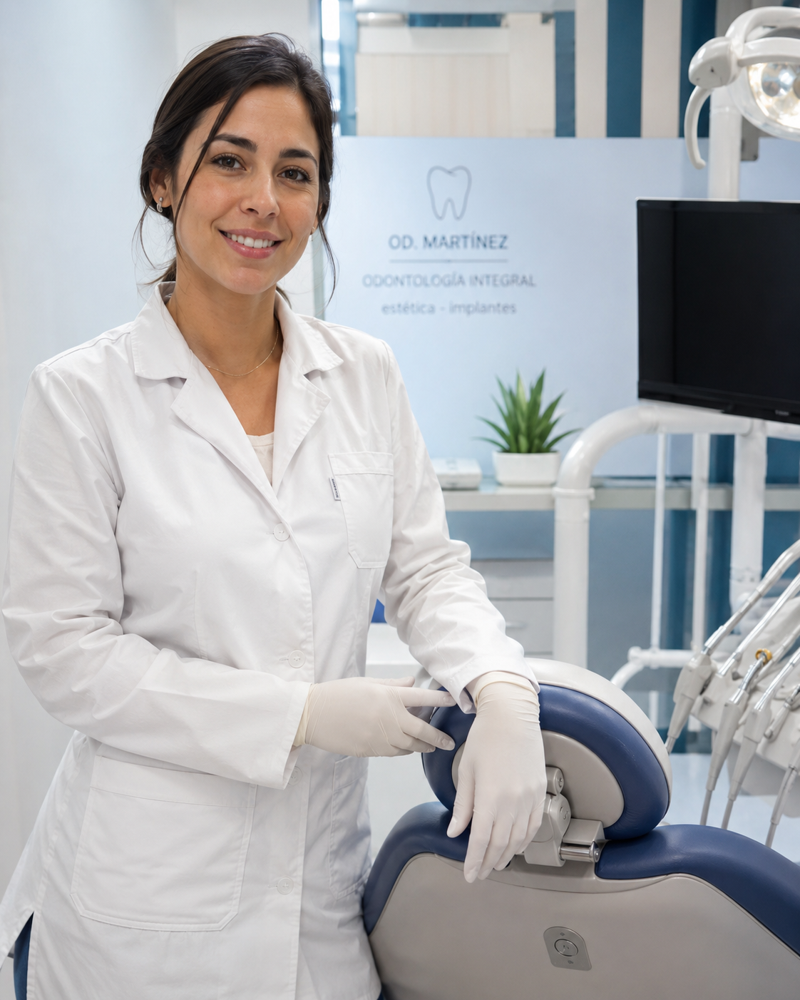
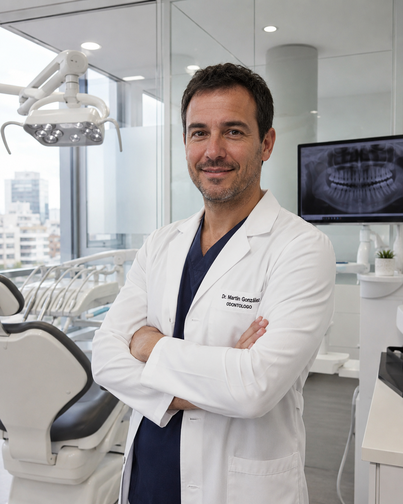
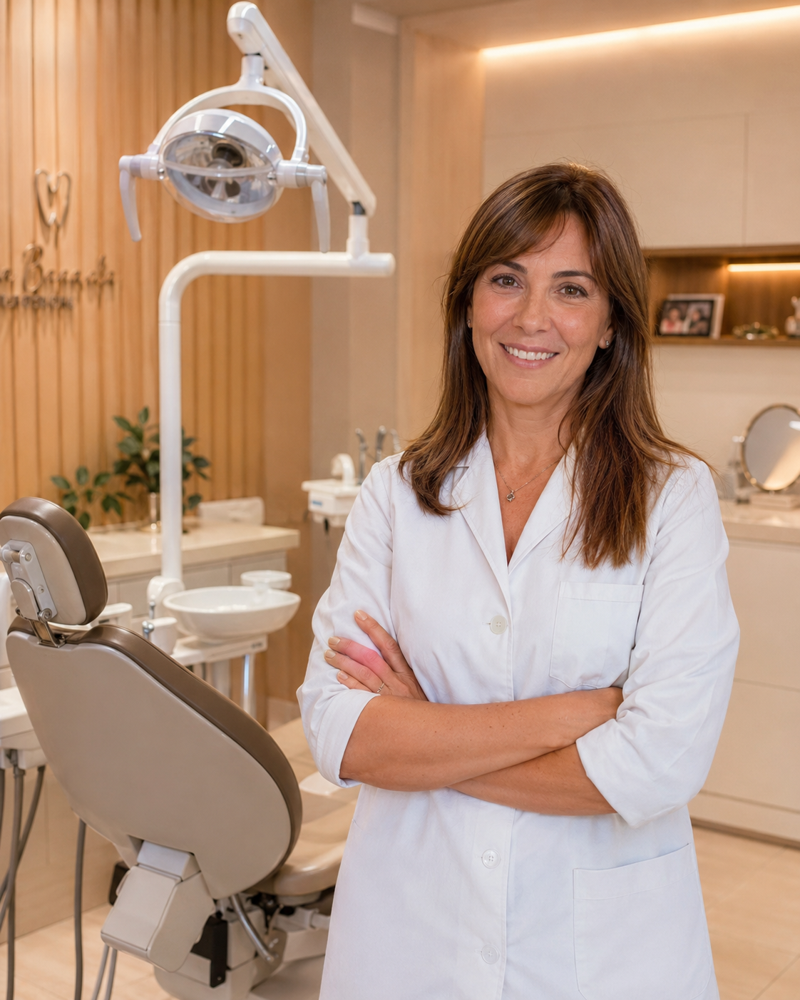
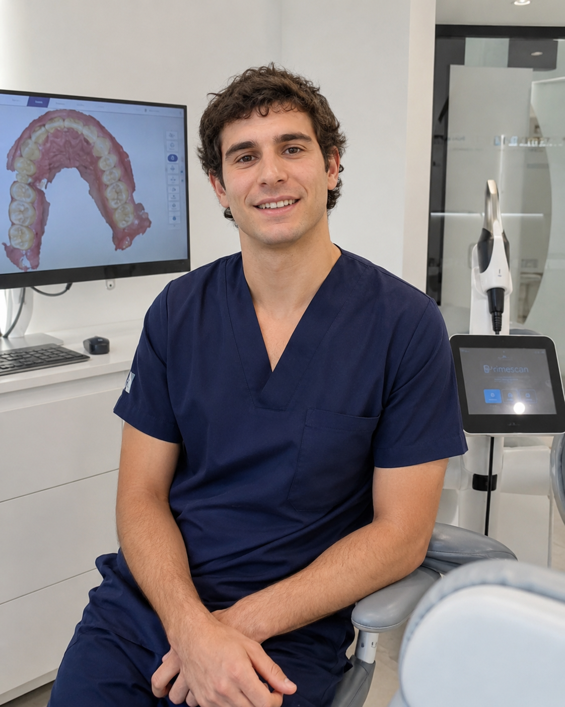
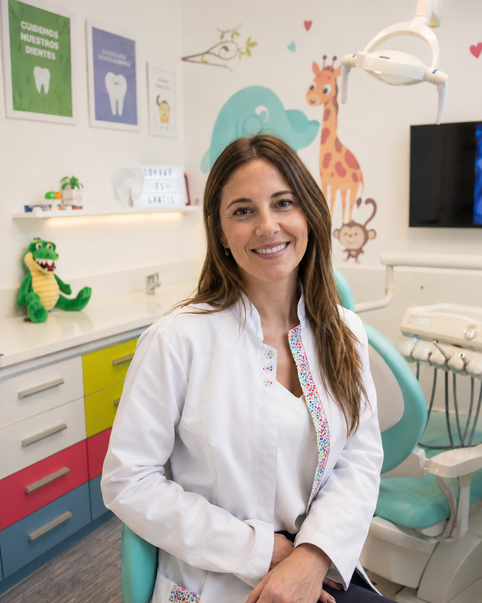
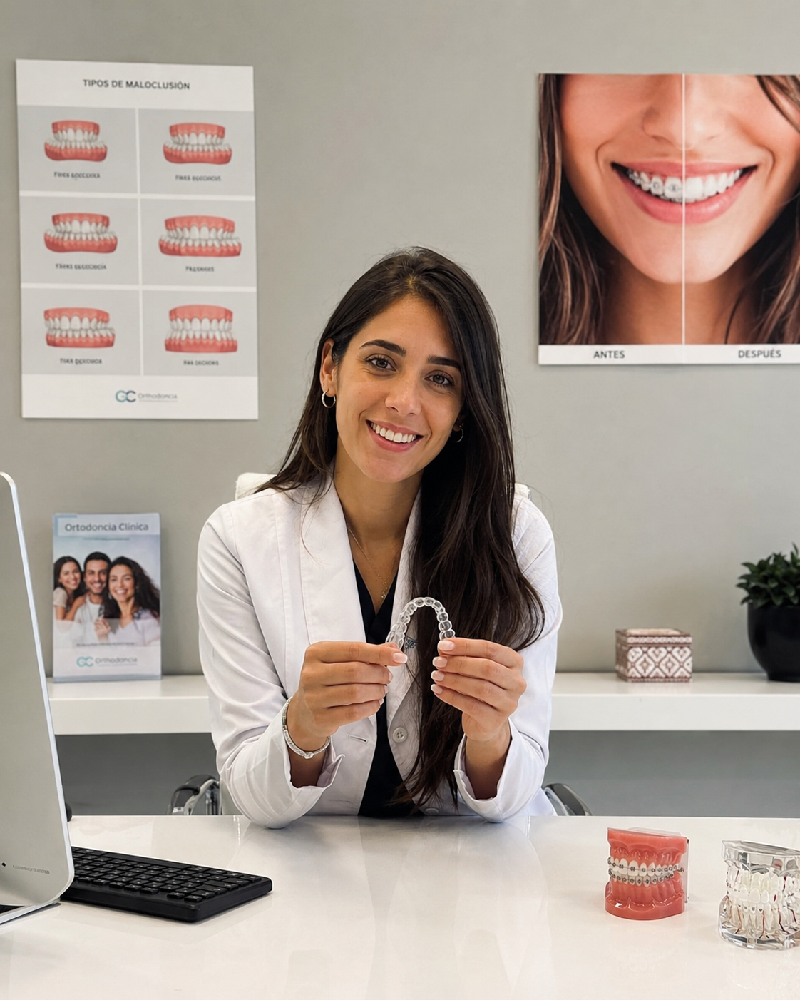
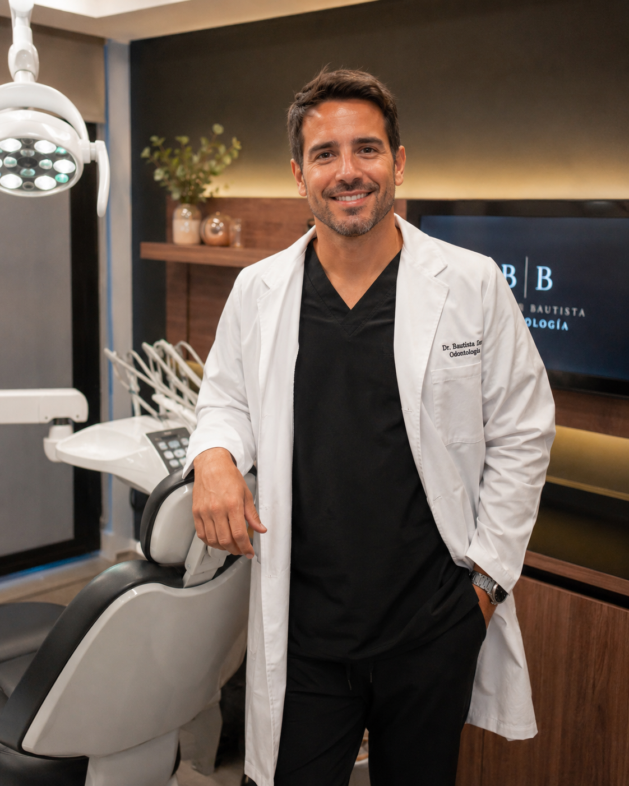
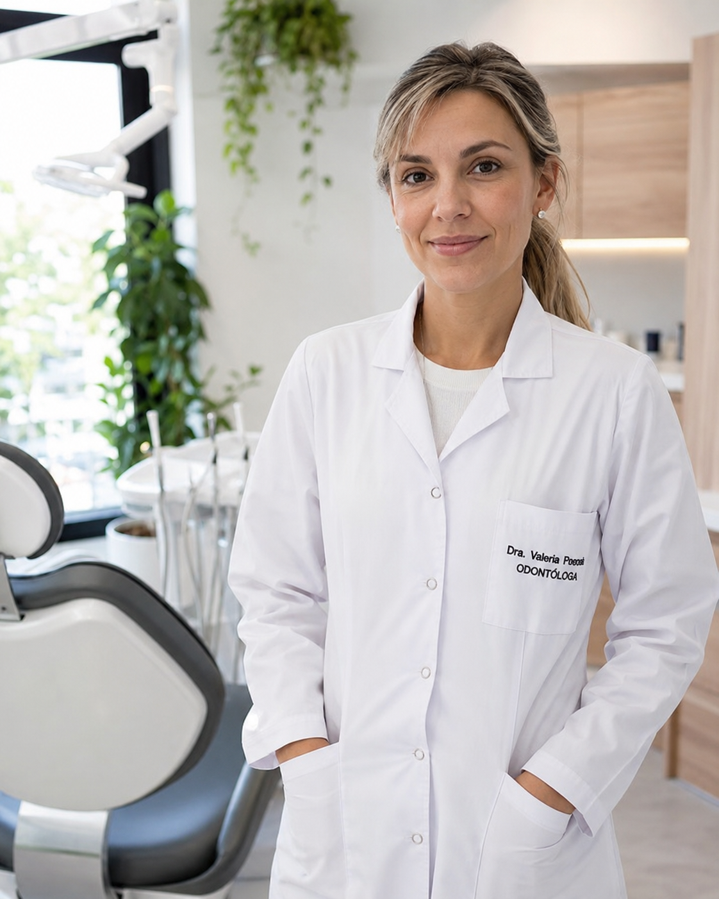

SaaS para consultorios odontologicos
Odentara
El software para gestionar agenda, pacientes, historias clinicas, odontograma, finanzas y equipos. Todo en un solo lugar, para cada persona del equipo.
Gestion completa del consultorio
Roles para cada equipo
Secretar-IA opcional
Agenda profesionalMartes
Sofia MartinezControl + limpieza
Juan PerezEndodoncia pieza 36
Carla NunezPrimera consulta
Odontograma18 piezas revisadas
Menos planillas sueltasLa informacion importante vive en un solo lugar.
Recepcion mas agilTurnos, pacientes y pagos se resuelven sin saltos.
Clinica trazableRegistros, imagenes y auditoria para decidir mejor.
Producto
Todo el consultorio trabajando sobre la misma informacion.
Odentara conecta recepcion, profesionales y administracion para que cada turno, paciente, tratamiento y movimiento financiero quede ordenado en un solo lugar.
Modulos
Todo lo que un equipo odontologico espera encontrar.
Agenda inteligente
Turnos por profesional, duracion, estados y cambios de fecha para que recepcion trabaje con claridad.
Pacientes
Ficha completa, historial, contacto y contexto administrativo antes de cada atencion.
Historias clinicas
Evoluciones, tratamientos, odontograma y registros por pieza dental para el equipo clinico.
Imagenes clinicas
Archivo visual del paciente asociado al seguimiento odontologico y a sus consultas.
Finanzas
Control de cobros, facturas, movimientos y tratamientos para mirar el negocio con datos.
Roles y auditoria
Permisos para administradores, secretarias y profesionales, con registro de actividad.
Servicio adicional
Secretar-IA
Atencion por WhatsApp automatizada y a medida para tu consultorio.
Odentara es el sistema principal de gestion. La Secretar-IA es un servicio extra y opcional para consultorios que quieren automatizar consultas, turnos, recordatorios y derivaciones por WhatsApp.
Se configura a medida segun tus horarios, profesionales, tratamientos, reglas de agenda y tono de atencion.
Cotizar Secretar-IA
No esta incluido por defecto en los planes del software. Se cotiza segun alcance, volumen y nivel de automatizacion.
Secretar-IAOdentara conectado
Hola, quiero pedir un turno para limpieza.
Claro. Tengo disponibilidad el martes 10:30 o jueves 16:00. ¿Cual preferis?
Jueves 16:00.
Perfecto. Te reservo con Dra. Molina el jueves a las 16:00. Te enviaremos un recordatorio. ✓✓
Planes
El plan que hace crecer tu consultorio.
Sin costos ocultos. Sin contratos anuales. Cancelás cuando querés.
Inicial
Para el profesional independiente
Dejá el papel y las planillas. Gestioná todo desde un solo lugar desde el primer día.
- 1 profesional
- Agenda y gestión de turnos
- Pacientes e historia clínica
- Odontograma completo
- Recordatorios automáticos
- Soporte por email
Clínica
Para el equipo que quiere trabajar en orden
Agenda, recepción, clínica y administración conectadas. Un solo flujo para todo el equipo.
- Hasta 3 profesionales
- Usuarios administrativos ilimitados
- Historias clínicas y odontograma
- Imágenes clínicas en la nube
- Facturación, caja y reportes
- Roles y permisos por usuario
Sin tarjeta de crédito · Demo en 24 hs
Pro
Para clínicas con mayor volumen
Escala sin desorden. Más profesionales, almacenamiento extendido y soporte dedicado.
- Profesionales sin límite
- Auditoría y reportes avanzados
- Soporte prioritario
- Mayor almacenamiento de imágenes
- Implementación personalizada
- Acceso API (próximamente)
Secretar-IA — servicio adicional opcional
Ver Secretar-IA
Bot de WhatsApp que atiende consultas, confirma turnos y envía recordatorios en automático. Se integra a cualquier plan.
Los profesionales que ya usan Odentara no vuelven atrás.

"Odentara transformó la forma en que gestiono mi consultorio. Los turnos, las historias clínicas y la facturación en un solo lugar. No puedo imaginar volver atrás."

"Antes perdía tiempo coordinando turnos por WhatsApp. Con Odentara el equipo trabaja ordenado, los pacientes reciben recordatorios y yo me concentro en atender."

"La historia clínica digital y el odontograma me ahorraron horas de papelerío. Hoy tengo todo centralizado y puedo atender más pacientes sin perder calidad."

"El módulo de ortodoncia con el escáner integrado cambió todo. Puedo hacer el seguimiento de cada caso desde la plataforma sin depender de carpetas físicas."

"Trabajo con pacientes pediátricos y necesitaba un sistema que me ayude a llevar el seguimiento por familia. Odentara lo resuelve de forma simple y clara."
"Llevo más de 25 años en la profesión y este es el primer sistema que realmente se adapta al ritmo de un consultorio real. La implementación fue sencilla y el soporte excelente."

"Gestionar mis casos de ortodoncia con alineadores era complicado. Odentara me permite hacer seguimiento visual y mantener todo el historial actualizado."

"Tengo una clínica con tres profesionales y antes la coordinación era un problema constante. Con Odentara cada uno tiene su agenda y yo veo todo desde el panel."

"En una semana el equipo ya manejaba turnos, facturación e historias clínicas. La implementación fue mucho más rápida de lo que esperábamos."
Demo comercial
Mostrale a tu equipo como se veria Odentara en su rutina diaria.
Contanos el tamaño del consultorio y que modulo te interesa priorizar. Te devolvemos una demo enfocada en tu flujo real de trabajo.